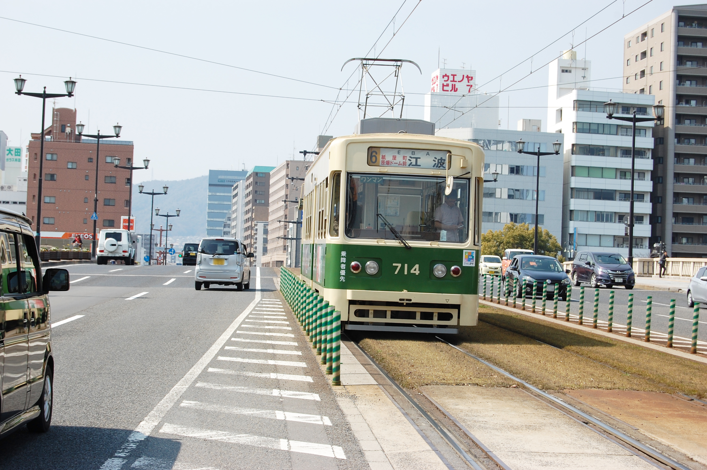
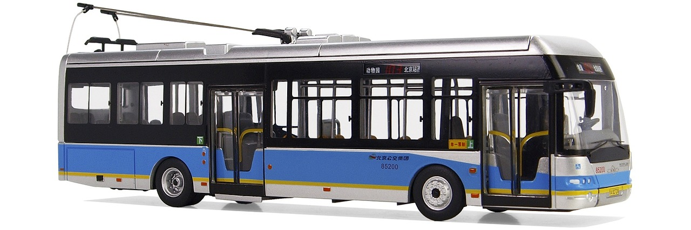
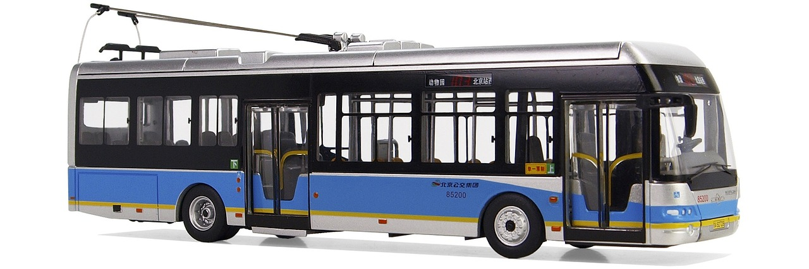

１．質問
- 東海道新幹線が開通したときはどのような変化がありましたか オリンピックの影響もだが、それによる町の人の変化（人が増えたとか、サラリーマンが増えたとか）
- さまざまな路線が開通してきた記録がありますが、大きな変化や実感はありましたか？ 交通機関の発達による変化について
- 昔は路面電車やトロリーバス（？）があったようでしたがそれは生活の中でどのようなものでしたか？ 今ない（もしくは一般的でない）交通機関がどのようであったか
- 今は昔と比べて様々な面で変化していると思いますが、特に今と昔で違いを実感することはありますか？ 路面電車やトロリーバス廃止にも関わる景観の変化や、単純に高層ビルの出現等、建物の雰囲気とか建材とか
- アジア卓球選手権大会や、区民会議があったと聞きますがそれらの存在感はどれほどでしたか？ 大会といった行事ごとへの関心度や、選挙といったものへの関心度がどれほどであったか
２．付属写真

路面電車についての写真

東海道新幹線についての写真

トロリーバスについての写真
路面電車についての写真
東海道新幹線についての写真

トロリーバスについての写真